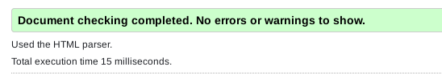

- HTTP
- El http (del inglés HyperText Transfer Protocol o Protocolo de Transferencia de Hiper Textos)
es el protocolo de transmisión de información de la World Wide Web, es decir, el código que
se establece para que el computador solicitante y el que contiene la información solicitada
puedan “hablar” un mismo idioma a la hora de transmitir información por la red.
- HTML
- El Lenguaje de Marcado de Hipertexto (HTML) es el código que se utiliza para estructurar y
desplegar una página web y sus contenidos: Por ejemplo, sus contenidos podrían ser
párrafos, una lista con viñetas, o imágenes y tablas de datos.
HTML no es un lenguaje de programación; es un lenguaje de marcado que define la estructura
de tu contenido. HTML consiste en una serie de elementos que usarás para encerrar diferentes
partes del contenido para que se vean o comporten de una determinada manera.
Las etiquetas de encierre pueden hacer de una palabra o una imagen un hipervínculo a otro sitio, se pueden cambiar
palabras a cursiva, agrandar o achicar la letra, etc.
- URL
- URL significa Uniform Resource Locator (Localizador de Recursos Uniforme).
Una URL no es más que una direccion que
es dada a un recurso único en la Web. En teoria, cada URL válida apunta a un único recurso.
Dichos recursos pueden ser páginas HTML, documentos CSS, imagenes, etc.
- TCP/IP
- TCP/IP son las siglas de Transmission Control Protocol/Internet Protocol (Protocolo de control de transmisión/Protocolo de Internet).
TCP/IP es un conjunto de reglas estandarizadas que permiten a los equipos comunicarse en una red como Internet.
Por sí mismo, un equipo puede realizar determinadas tareas. Pero su potencia se multiplica cuando es capaz de comunicarse con otros.
Muchas de las cosas para las que utilizamos los equipos (enviar mensajes de correo electrónico, ver Netflix u obtener indicaciones para
llegar a un sitio) dependen de la comunicación entre ellos. Pueden ser equipos de distintas marcas o incluso encontrarse en zonas del mundo diferentes.
Y las personas y programas que los utilizan pueden hablar distintos lenguajes humanos e informáticos.
- Internet
-
Internet es un neologismo del inglés que significa red informática descentralizada de alcance global.
Se trata de un sistema de redes interconectadas mediante distintos protocolos que ofrece una gran
diversidad de servicios y recursos, como, por ejemplo, el acceso a archivos de hipertexto a través de la web.
Internet es un anglicismo que se forma por la abreviación del término International Network of Computers,
que en español se podría traducir como "Red Internacional de Computadoras", o también como "Red de redes".
- W3C
- El W3C, World Wide Web Consortium, es una organización internacional que establece estándares y guías para el desarrollo de la web.
Su objetivo es asegurar la interoperabilidad y accesibilidad de los sitios web, promoviendo la adopción de tecnologías y prácticas
que mejoren la experiencia del usuario. El cumplimiento de los estándares del W3C es fundamental para garantizar la calidad y el éxito
de las estrategias de marketing digital.
- Mozzilla Foundation
- Fundación Mozilla (estilizado moz://a) es una organización sin ánimo de lucro dedicada a la creación de software libre.
Tiene como misión «mantener la elección y la innovación en Internet». La fundación es conocida por crear el navegador
Mozilla Firefox o, simplemente Firefox en la actualidad.
Cualquier persona o compañía puede colaborar en el proyecto Mozilla, ya sea aportando código, probando
los productos, escribiendo documentación o de cualquier otra manera. El trabajo desinteresado de los
contribuidores de Mozilla hace que sea una organización sin fines de lucro.

Tornar a pàgina principal